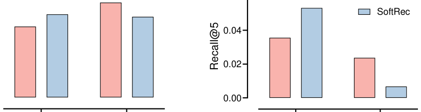

Learning Robust Sequential Recommenders through Confident Soft Labels (通过高置信软标签学习鲁棒的序列推荐器)
- 会议/期刊: TOIS (ACM Transactions on Information Systems)
- 作者与机构: Shiguang Wu, Xin Xin, Pengjie Ren, Zhumin Chen, Jun Ma (山东大学)；Maarten de Rijke (阿姆斯特丹大学)；Zhaochun Ren (莱顿大学)
- 推荐链路定位: 召回（Next-Item 序列召回）
- 研究方向: 序列与会话推荐 / 自监督对比学习与交互去噪
- 论文原文: https://arxiv.org/abs/2311.02446v1
- 开源代码: https://github.com/Furyton/CSRec（基于 RecBole）
TL;DR (1分钟核心速览)
序列推荐普遍把隐式反馈当作多分类任务、用 one-hot 标签 + softmax 训练，但 one-hot 标签稀疏且易被曝光偏差与未曝光噪声污染。本文提出 CSRec：用一个"教师模块"生成高置信软标签，与 one-hot 硬标签联合监督学生推荐器。教师模块给出三种构造方式——模型级（多种子集成）、数据级（多子集集成）、训练级（双教师 KL 一致性 + 低秩噪声矩阵正则）。在 4 个数据集、4 种学生模型（GRU4Rec/NextItNet/NARM/SASRec）上，采用 Leave-One-Out + 全库 Full-Ranking 协议，Recall@10 相对 Base 最高提升约 11.5%（Last.FM/GRU4Rec），且在小众用户与低评分样本上鲁棒性显著更优。
Background & Motivation (背景与核心矛盾)
- 主流范式: 将用户序列 \(\boldsymbol{s}_u\)输入 GRU/CNN/Transformer 编码器，对全物品集做 softmax 多分类，最小化与真实下一项\(i_{|\boldsymbol{s}_u|+1}\) 的交叉熵。
- 前人局限: 其一，one-hot 标签把"未交互"一律视为负例，但未交互可能只是未曝光（user unawareness），交互也可能源于曝光偏差，标签本身被污染；其二，已有软标签方案（SoftRec 的流行度/用户级软标签、Liu 等的均匀曝光蒸馏）要么依赖昂贵难采的均匀曝光数据，要么软标签本身被训练数据与教师模型带偏。
- 核心洞察 (Key Insight): 作者将观测下一项建模为 \(i_{|\boldsymbol{s}_u|+1}=\arg\max_{i\in\mathcal{I}}P(i|\boldsymbol{s}_u)+\epsilon\)，噪声\(\epsilon\)可分解为模型级噪声\(\epsilon_m\)与数据级噪声\(\epsilon_d\)。不同模型/不同数据子集捕获的噪声方向不同，而真实用户偏好应在各模型间保持一致——因此多教师协作可在平均掉噪声的同时保留共性真实兴趣。
- 本文切入点: 用"多教师一致性"作为置信度的代理，构造高置信软标签，仅训练期多模型、推理期单模型，兼顾鲁棒性与效率。

Method (核心方法设计)
1. 整体框架 (Overall Architecture)
CSRec 是"教师生成软标签 + 学生联合监督"的两段式学习框架。教师模块由 \(m\)个与学生同构的模型\(\{g_1,\dots,g_m\}\)组成，先各自训练（或按训练级方式协同训练），再将其 logits 融合为\(e_u\)；随后把融合 logits 经温度\(T\)平滑后与 one-hot 标签按等权混合，得到软标签\(r_u\)；学生模型\(f\)同时优化 one-hot 交叉熵与对\(r_u\) 的 KL 散度。推理阶段只保留学生模型，教师全部丢弃，因此在线开销与 Base 完全一致。
flowchart TD
A["用户序列 s_u"] --> B["教师模块 g_1..g_m<br/>(模型级/数据级/训练级)"]
B --> C["logits 融合 e_u"]
C --> D["温度平滑 + one-hot 混合<br/>r_u = ½(softmax(e_u/T)+onehot)"]
A --> E["学生模型 f"]
D --> F["联合损失 L_s"]
E --> F
F --> G["Top-n 全库排序"]2. 关键设计拆解 (Key Designs)
-
模型级 / 数据级教师（集成式去噪）：针对 \(\epsilon_m\)与\(\epsilon_d\)两类噪声，分别用"同架构不同随机种子"与"同架构不同数据子集（均匀采样比例\(p\)）"训练\(m\)个教师，输出取平均\(e_u=\sum_k g_k(\boldsymbol{s}_u)/m\)。直觉是模型特有噪声零均值化后被抵消，而跨模型一致的信号（真实偏好）在平均中保留，从而得到低方差软标签。
-
训练级教师（端到端一致性正则）：不做事后集成，而是让主教师 \(g_1\)在辅助教师\(g_2\) 的引导下直接学出鲁棒输出。由贝叶斯展开可证负对数似然存在上界，导出鲁棒正则： $\(\ell_r=\alpha\,\mathrm{KL}(P_{g_2}\|P_{g_1})+(1-\alpha)\,\mathrm{KL}(P_{g_1}\|P_{g_2})-\sum_{j\in\mathcal{I}}\log(h_{i,j})\,P_{g_1}(j|\boldsymbol{s}_u)\)$ 其中 \(h(i,j)\approx P(i|j)\)用低秩分解\([h]=\mathbf{M}_{|\mathcal{I}|\times d}\mathbf{N}_{d\times|\mathcal{I}|}\)建模为全局噪声转移矩阵，刻画"理想物品\(j\)被观测成\(i\)"的混淆概率。双向 KL 强制两教师互一致，末项则用噪声矩阵校正观测偏差——这是本文相对普通蒸馏损失的唯一增量项。
-
训练目标、负采样与推理效率：学生损失为 \(\ell_s=(1-\beta)\ell_{ce}(\boldsymbol{s}_u,f,i_{|\boldsymbol{s}_u|+1})+\beta\,\mathrm{KL}(P_f(\cdot|\boldsymbol{s}_u)\|r_u)\)，其中\(r_u=\frac{1}{2}(\mathrm{softmax}(e_u/T)+\mathrm{onehot}(i_{|\boldsymbol{s}_u|+1}))\)。全程免负采样（softmax 全库归一化），规避了 BPR/BCE 的采样分布敏感问题；训练需\(m{+}1\)个模型（\(m=2\)），推理仅 1 个。
Experimental Setup & Evaluation Protocol (实验设置与评估协议)
- 数据集与预处理: 全部采用
5-core过滤，序列按固定长度切分（Last.FM 长度 20，其余为 10），过短补 padding、过长切子序列。
| 数据集 | #Users | #Items | #Interactions | 稀疏度 | 特征/场景说明 |
|---|---|---|---|---|---|
| Last.FM | 1,090 | 3,646 | 52,551 | 98.7% | 音乐收听，交互最稠密 |
| Yelp | 30,431 | 20,033 | 316,354 | 99.95% | 本地商户评论 |
| Electronics | 83,427 | 29,351 | 684,449 | 99.97% | 亚马逊电子产品，含评分 |
| Movies & TV | 47,966 | 21,035 | 625,813 | 99.94% | 亚马逊影视，含评分 |
- 数据划分与防穿越 (Splitting Strategy):
Leave-One-Out——每用户最后一项作测试、倒数第二项作验证，其余训练。 - 排名评测协议 (Ranking Protocol): 无偏
Full-Ranking（全物品集作为候选，未采样负例）。指标 Recall@10 / NDCG@10；另在两个 Amazon 数据集上引入过滤版指标 Recall+@10 / NDCG+@10，仅统计真实评分 \(r_u\ge\delta=4\) 的样本，用于检验"推荐是否命中真实正偏好"（评分仅用于评测，不参与训练）。 - 对比基线与超参设置: 学生模型 GRU4Rec / NextItNet / NARM / SASRec；训练方案 Base、SoftRec、CSRec-M/D/T。Embedding 维度 \(d=64\)，\(\alpha,\beta\in\{0.25,0.5,0.75\}\)，\(T\in\{1,3,6,9\}\)，\(m=2\)，\(p=0.8\)，Adam lr=0.001；显著性检验\(p<0.05\)/\(p<0.1\)。
Key Experimental Results (实验关键数据)
1. 主实验对比 (Main Results)
Recall@10 (%)，节选最具代表性的四组（GRU4Rec / NextItNet / NARM / SASRec）：
| 数据集 | 方法 | GRU4Rec | NextItNet | NARM | SASRec |
|---|---|---|---|---|---|
| Last.FM | Base | 16.683 | 15.456 | 20.260 | 20.350 |
| SoftRec | 17.427 | 15.473 | 20.486 | 20.746 | |
| CSRec-D | 18.607 | 16.201 | 20.739 | 21.131 | |
| CSRec-M | 18.165 | 16.466 | 20.819 | 20.874 | |
| Improv. vs Base | +11.5% | +6.5% | +2.8% | +3.8% | |
| Yelp | Base | 5.812 | 8.077 | 8.587 | 8.523 |
| SoftRec | 6.108 | 8.303 | 8.108 | 9.459 | |
| CSRec-T | 6.526 | 8.589 | 8.700 | 9.421 | |
| CSRec-M | 6.405 | 8.587 | 8.900 | 9.485 | |
| Improv. vs Base | +12.3% | +6.3% | +3.6% | +11.3% | |
| Electronics | Base | 5.178 | 4.900 | 5.211 | 6.932 |
| SoftRec | 5.431 | 5.204 | 5.490 | 6.963 | |
| CSRec-T | 5.595 | 5.356 | 5.905 | 7.001 | |
| CSRec-M | 5.545 | 5.666 | 5.787 | 6.737 | |
| Improv. vs Base | +8.1% | +15.6% | +13.3% | +1.0% | |
| Movies & TV | Base | 8.413 | 7.377 | 9.383 | 11.191 |
| SoftRec | 9.541 | 8.228 | 9.402 | 10.908 | |
| CSRec-T | 9.704 | 8.461 | 9.876 | 11.195 | |
| CSRec-M | 9.638 | 8.744 | 9.999 | 11.198 | |
| Improv. vs Base | +15.3% | +18.5% | +6.6% | +0.1% |
过滤版指标（Recall+@10）上，Electronics 的 GRU4Rec 由 Base 5.577 → CSRec-T 5.975，Movies & TV 的 NARM 由 9.712 → CSRec-M 10.361，说明增益并非来自"命中高曝光低评分物品"。
2. 消融实验 (Ablation Study)
| 消融对象 | 设置 | 关键指标变化 | 结论 |
|---|---|---|---|
| 教师数量 \(m\)（CSRec-M/D，NARM） | \(m\): 1 → 2 → 3 → 4 | \(m{=}2\)时 NDCG@10 明显上升，\(m\ge3\) 后基本持平 | 2 个教师即够，边际收益递减 |
| 子采样比例 \(p\)（CSRec-D） | \(p\in\{0.5,0.6,0.7,0.8,0.9\}\) | \(p{=}0.8\)最优；\(p\)过大子集重叠、教师趋同，\(p\)过小随机性过强 | \(p=0.8\) 为稳健默认值 |
| 噪声矩阵项 \(-\sum_j\log(h_{i,j})P_{g_1}(j\|\boldsymbol{s}_u)\)（CSRec-T） | with vs. without | Electronics Recall@10 由 ~0.060 升至 ~0.066；Movies & TV 亦一致提升 | 低秩噪声转移矩阵是训练级教师的核心增益来源 |
3. 关键实验发现 (Key Findings)
- 教师类型与数据稠密度强相关：Last.FM（最稠密）上 CSRec-D 最优（GRU4Rec 18.607），而稀疏的 Yelp/Electronics 上 CSRec-T 更稳（Yelp GRU4Rec 6.526，较 SoftRec 再 +6.8%）；CSRec-M 则在四数据集上普遍稳健，可作默认选择。
- 学生架构越"弱"收益越大：RNN/CNN 学生（GRU4Rec、NextItNet）提升最显著（Movies & TV 上 NextItNet +18.5%），自注意力 SASRec 提升最小（+0.1%~+1.0%），与"Transformer 本身更抗噪"的既有结论吻合，但 CSRec 仍能在多数情形带来显著增益。
- 软标签纠偏了流行度偏差：图 3 显示 SoftRec 在小众型用户上反而掉点（图 1 已暴露该问题），而 CSRec 三种方法在 niche-type 用户上均回升，Yelp 上热门型与小众型用户同时提升——说明多教师一致性筛掉了"有害流行度偏差"，保留了跨模型一致的"有益大众兴趣"。
Highlights & Limitations (亮点、对比与审稿批判)
- 与代表作对比 (vs. Prior Work): 相较 SoftRec（单一流行度教师，软标签被数据偏差污染、伤害小众用户），CSRec 用多教师一致性把"偏差"与"共识"分离；相较 Liu 等的均匀曝光蒸馏（需昂贵均匀曝光数据），CSRec 完全从有偏日志中自举软标签；相较 CV/NLP 的多教师蒸馏（目标是压缩模型、训练与推理均需集成），CSRec 的目标是抗噪鲁棒性且推理零额外开销。
- 可迁移亮点: (i) "多随机种子/多子集教师平均"是极低成本、即插即用的正则手段，可直接套用到任何 softmax 多分类召回模型；(ii) 低秩噪声转移矩阵 \(h=\mathbf{M}\mathbf{N}\) 的建模思路可迁移到曝光偏差校正与标签噪声学习。
- 审稿级局限批判: (i) 训练需 \(m+1\) 个完整模型串行训练，训练成本约为 Base 的 3 倍，论文自认"pipeline 低效"，且未给出训练耗时对比；(ii) 全库 softmax 在 8 万物品级数据集尚可，但未验证十万级以上物品集的可扩展性，也未与 sampled softmax 等高效方案对比；(iii) 过滤版指标仅覆盖两个 Amazon 数据集，鲁棒性结论的外部效度有限。
Rating (四维评分)
- 方法创新性 (Novelty): ⭐⭐⭐⭐ （把"多教师一致性"重新诠释为软标签置信度代理，训练级方法有贝叶斯上界推导与低秩噪声矩阵支撑，但整体属蒸馏框架的巧妙迁移而非全新范式）
- 评估协议与实验扎实度 (Protocol & Experiments): ⭐⭐⭐⭐ （4 数据集 × 4 学生模型 × 5 训练方案的全库排序矩阵相当完整，另设评分过滤指标与流行度/长度/稀疏度分桶分析；扣分在于缺少训练开销与更大规模物品集的验证）
- 写作与数学规范度 (Clarity & Rigor): ⭐⭐⭐⭐ （三种教师模块的动机—公式—算法伪代码链条清晰，Eq.3–Eq.12 的 KL 上界推导完整；但 \(h(i,j)\) 的条件独立假设略强，且部分符号在正文与附录间复用稍显紧凑）
- 工业落地与复现价值 (Industrial & Practical Value): ⭐⭐⭐⭐ （推理期零额外开销、免负采样、代码已开源于 RecBole 生态，落地门槛低；主要障碍是训练期 3 倍算力与教师超参 \(m,p,\alpha,\beta,T\) 的调优成本）